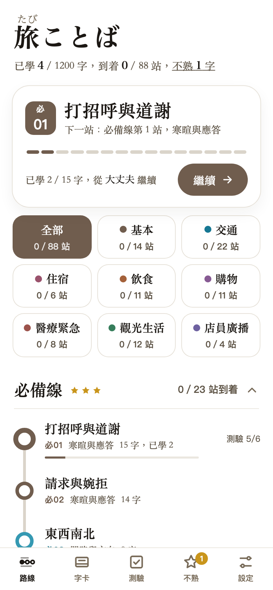
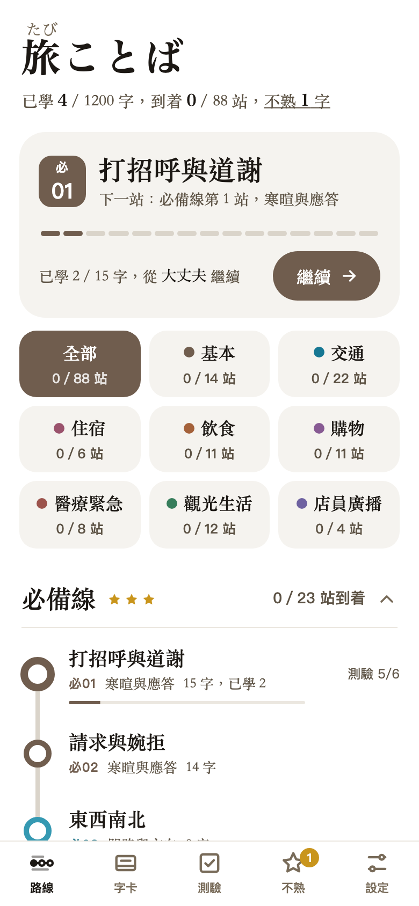
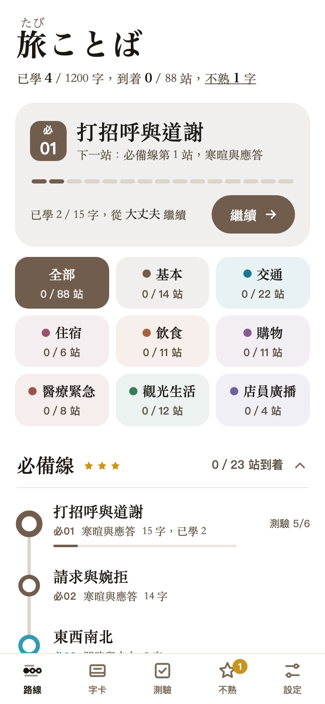
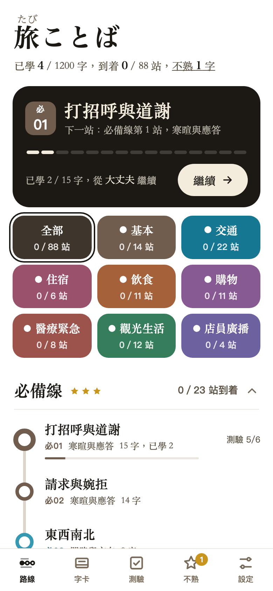
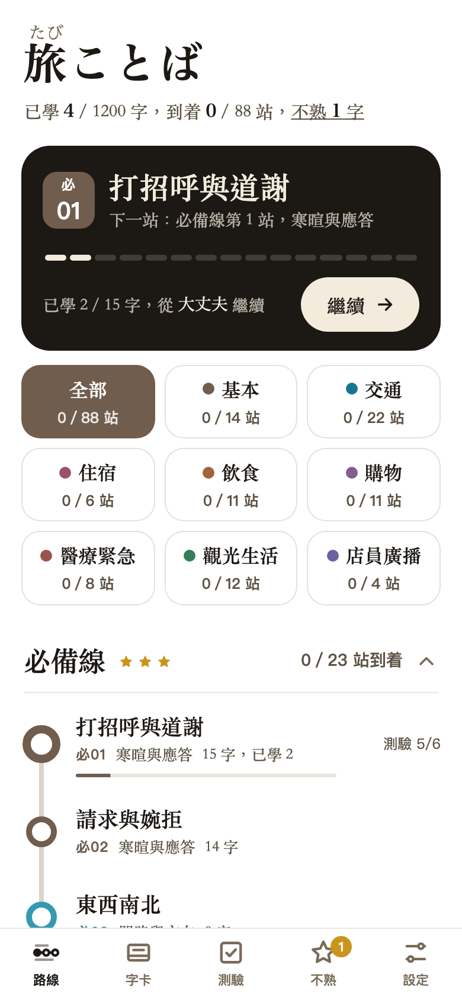

1
白色塊細框
卡片和色塊都是白色，用一圈細框分開。最素，顏色只在小圓點上。

開啟可操作版2
淺灰色塊
卡片和色塊都是很淡的暖灰色，沒有框線。安靜，分類靠小圓點。

開啟可操作版3
淡彩色塊
目前上線每個主題家族用自己顏色的極淡底色，「下一站」卡片也帶這一課的淡色。一眼看得出分類。

開啟可操作版4
家族實色
九個色塊都是實色、白字，「下一站」是深咖啡色卡片。最鮮明、最有份量。

開啟可操作版5
下一站深色
「下一站」是深咖啡色卡片，當作最醒目的焦點；主題色塊是白色細框。

開啟可操作版6
下一站淡彩
「下一站」帶這一課的淡色，主題色塊是白色細框。
開啟可操作版